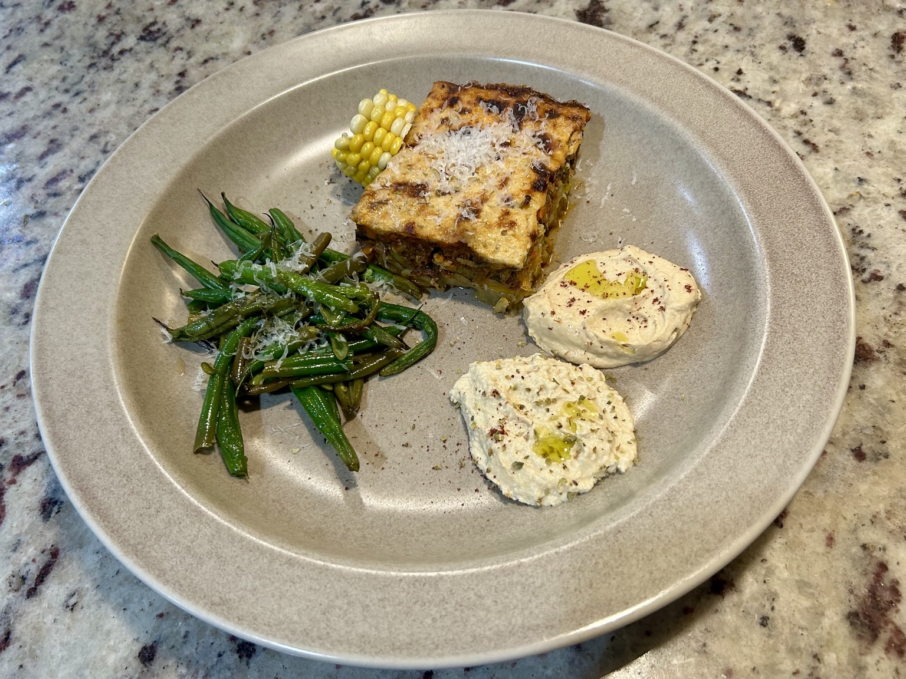
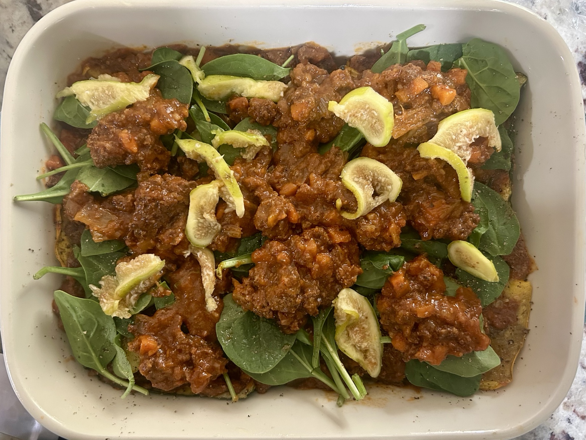
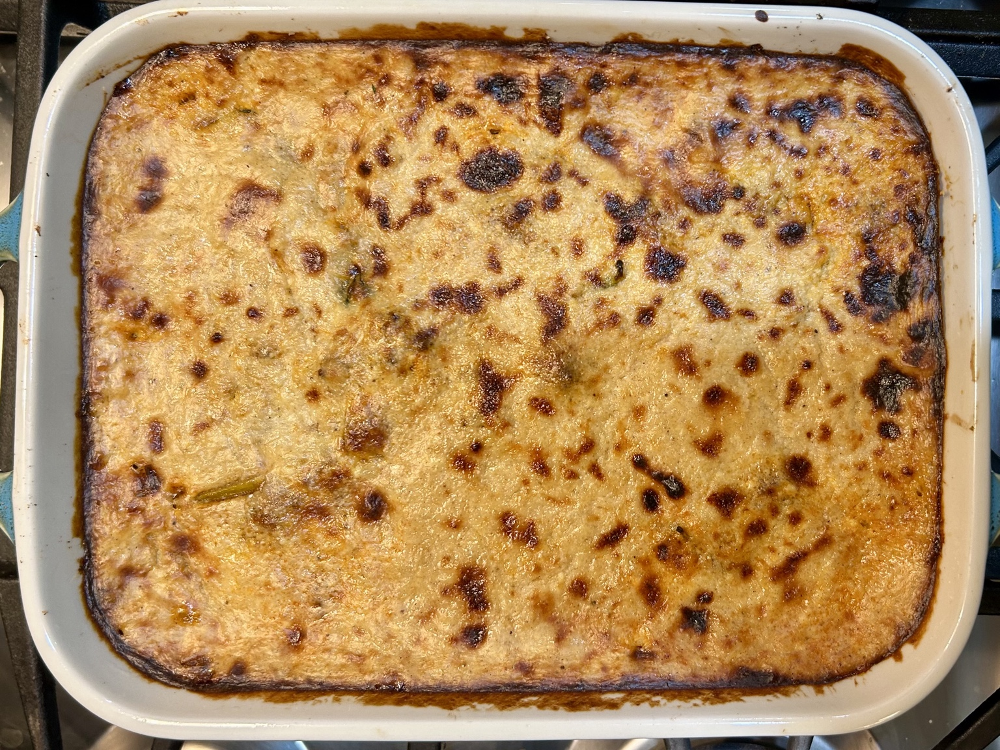
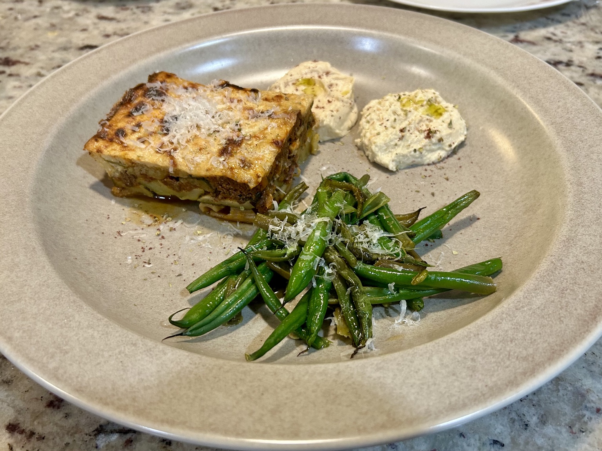

Main
Light Moussaka
A vegetable-forward moussaka layered with sweet potato, roasted eggplant and squash, a lean spiced meat sauce, and a light ricotta Mornay.




Ingredients
Vegetables
- ~300 g cooked sweet potato, sliced
- 1 medium eggplant, about 450 g
- 1 zucchini, about 250 g
- 1 yellow squash, about 250 g
- 1 tsp extra-virgin olive oil
Meat sauce
- ~500g ragù or any other tomato-based sauce of choice, e.g.
- Lean ground beef
- Italian trinity: onions, carrots, celery
- Passata
- 1 tsp cinnamon
- 1 tsp dried oregano
- 1/2 tsp allspice
- Salt, black pepper, to taste
Mornay
- 300 ml skim milk
- 15 g flour
- 8 g butter
- 60 g fresh ricotta
- 50 g Parmigiano-Reggiano, finely grated
- Nutmeg, to taste
- Black pepper, to taste
- Salt, as needed
Roast the vegetables
- Slice the eggplant, zucchini, and yellow squash lengthwise about 1/4 inch thick.
- Salt the eggplant for about 15–20 minutes, then blot it dry.
- Lightly coat all the vegetables with the olive oil and roast at 425°F for about 15–20 minutes, until softened and lightly browned.
Make the meat sauce
- Brown the extra-lean ground beef.
- Sweat the onions, saute the vegetables, add passata and the seasoning.
- Simmer until fairly thick.
Make the Mornay
- Melt the butter, whisk in the flour, and cook for about 5 minutes.
- Gradually whisk in the skim milk and cook until smooth and thickened.
- Remove from the heat, whisk in the ricotta, then stir in about 40 g of the Parmigiano-Reggiano.
- Season with nutmeg, black pepper, and salt.
Assemble and bake
- In an approximately 12 × 8 inch baking dish, layer tightly in this order: sweet potato, eggplant, meat sauce, zucchini and yellow squash, remaining meat sauce, then Mornay.
- Sprinkle the remaining approximately 10 g Parmigiano-Reggiano on top.
- Bake at 375°F for about 30–35 minutes, then broil briefly if more browning is wanted.
- Rest for about 15–20 minutes before cutting.
Serving
Cut after the resting time, once the layers have settled enough to hold together cleanly (best results achieved after refrigerating first).
Notes
The recipe is robust; I like to use any leftover tomato-based sauce on hand: ragu, or more specifically bolognese; as the pictures showcase, you can boost it with some spinach, add a bit of sweetness with fresh figs, etc. Make each moussaka unique!